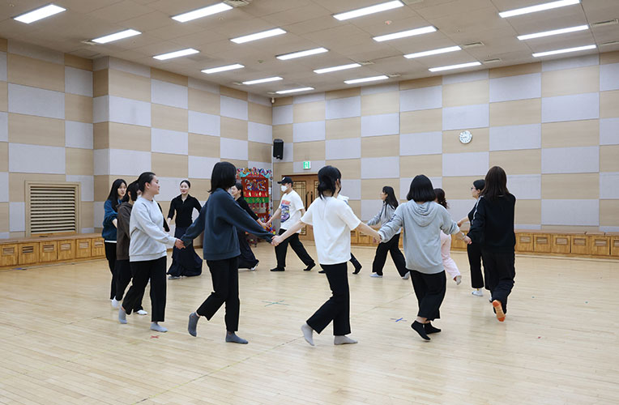

예비교사 국악강좌
- 대상
- 부산, 진주, 대구 교대 재학생
- 강사
- 국립부산국악원 직단원, 외부 강사
- 일시/장소
- 4월 1~2주(5일), 9월 1~2주(5일) 강습실, 교육체험관
- 수강료
- 무료
교육대학교 학생들을 대상으로 한 국악 교수법 강의
미래 국악 교육을 이끌어갈 교대 재학생에게 국악 교수법으로 구성한 프로그램. 교과서 제재곡 위주의 이론, 감상, 실기 교육을 제공하는 수업이다. 강좌 마지막 날에는 교과서와 연계한 공연을 관람함으로써 학습한 내용을 접목해볼 수 있다.
세부프로그램
국악이론 및 감상, 가창, 기악
